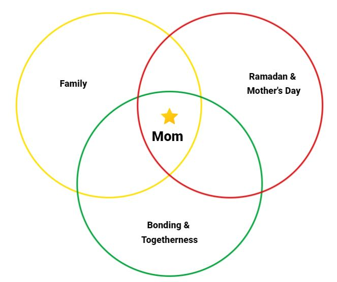
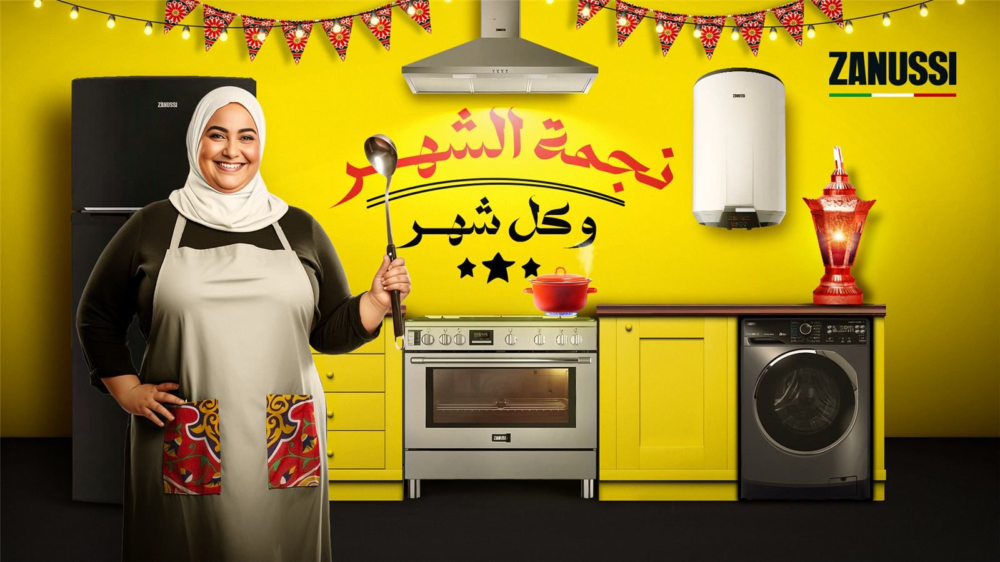
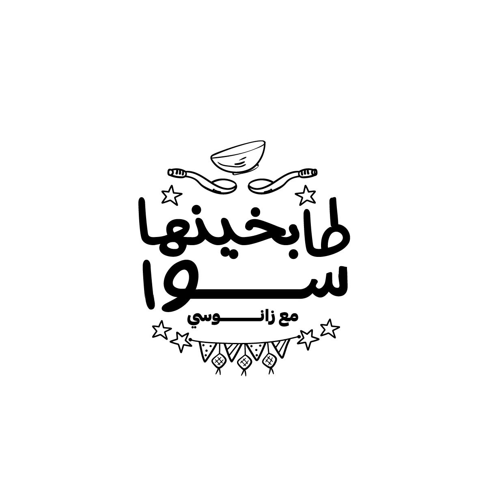

The home appliance market in Egypt is cluttered with global and local competitors; the market is functional and competes on quantifiable new technologies.
In a low-engagement category where shoppers can't tell products apart — and largely don't care — deliver a differentiated message built on Zanussi's heritage as a modern Italian brand.
Zanussi participates in a highly competitive advertising season (Ramadan): high cost-per-result in paid ads and low attention spans.
Create a space where Zanussi transcends traditional advertising — content people would love to watch even after the skip button appears, inviting families to weave their own narratives of togetherness.
Emphasize the mother's role as the anchor of family bonding and togetherness, and how Zanussi appliances help her in that.

Step 1 — The jingle. A track that carries the soul of the idea, built to travel as a TikTok sound.
Step 2 — The series. A Ramadan digital series with Zest, focused on family bonding through cooking — each episode pairs a mother and a relative in the kitchen.
Engage. Influencer episodes plus a digital activation: viewers submit their Ramadan recipes with the campaign hashtag, and winners are featured in the series.


Zest provides creative engaging cooking content — challenges and culinary competitions.